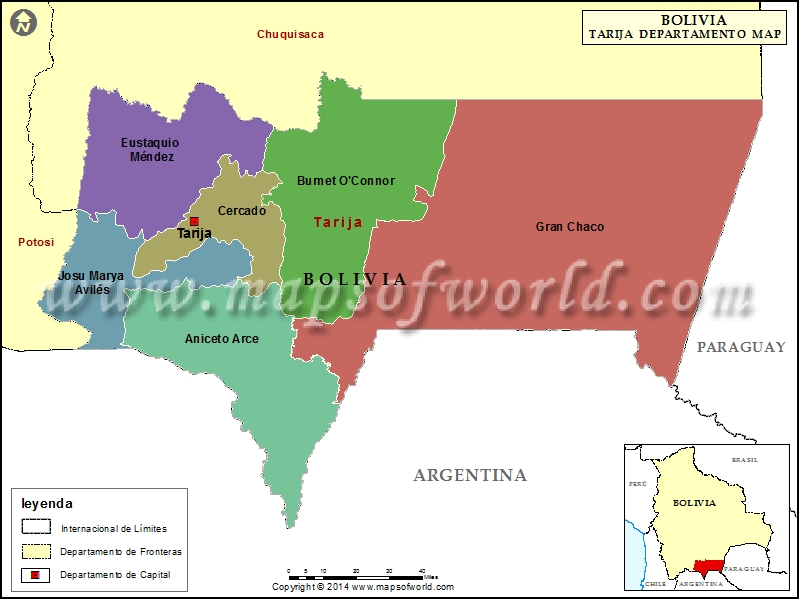

ARTICLE

Tarija, ciudad originalmente fundada con el nombre de Villa de San Bernardo de la Frontera de Tarixa, es un municipio y una ciudad de Bolivia, capital del departamento homónimo. Cuenta con una población de 563.342 habitantes en total.Se encuentra ubicada en el valle del río Guadalquivir a 1834 m s. n. m.